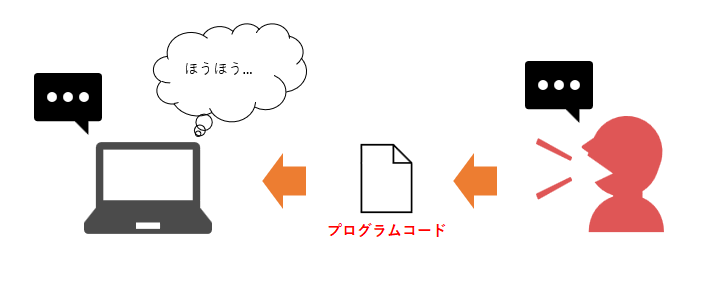
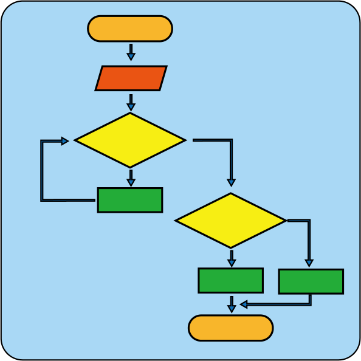

問題の解決
まずは以下の内容を見て下さい。
太郎さんは花子さんと約束した時間待ち合わせ場所へ行くのが遅れたため、怒られた。
太郎さんは何がいけなかったでしょうか？
この文章ではほぼ何も読み取れないと思います。
デートか何かの待ち合わせでしょうか。
しかし人間である我々はこの文章から想像を働かせる事で分かる事があると思います。例えば以下のような事柄です。
- 太郎さんと花子さんは事前に待ち合わせ場所へ何時に居合わせるかを話し合っていた
- 怒られたという事は親しい仲、または花子さんが太郎さんよりも立場が上の人間である
- 太郎さんが遅刻をした何らかの理由がある
しかしこれだけでは情報が少なすぎる事はないでしょうか？
待ち合わせ時間に遅れた太郎さんに本当に非があったのかどうかを検証するためにはもう少し詳しい内容が必要です。
以下の情報を太郎さんから得る事ができたとしましょう。
- 太郎さんは自宅から待ち合わせ場所まで十分到着できる時間を確保して出かけた
- 太郎さんは待ち合わせ場所まで電車を使って移動した。しかし電車は何かのトラブルで1時間遅れで運行していた
この情報を追加して考えると、太郎さんは寝坊をして待ち合わせ時間に間に合わなかったわけではない事が分かります。
利用した公共交通機関の遅延という情報があって、始めて太郎さんが花子さんに怒られた理由の分析が開始できます。
問題を解決するにはまず必要な情報を収集するところから始める事になります。
今回の例では、太郎さんは電車を使って待ち合わせ場所まで行く想定だったという事があります。
しかしそれでもまだ疑問として「花子さんが太郎さんを怒った」事実があります。
流石に太郎さんも遅れた理由を花子さんに話した事でしょう。それでは花子さんが怒った理由は何でしょうか？
今度は花子さんから以下の情報を得る事ができたとします。
- 太郎さんは普段から電車を使っており、遅延情報などは自身のスマートフォンに通知されるようになっている(事を知っていた)
- 太郎さんは電車以外にも待ち合わせ場所まで向かう手段として自家用車を所持しており、運転免許証を持っている
なんと太郎さんは電車が遅れている情報を事前に知っていた可能性が出てきました。一転して太郎さんピンチです。
そこで当時の状況を踏まえてもう少し詳しい情報を取得してみる事を試みます。
問題を解決するにはあらゆる視点から情報を得る必要があります。
- 待ち合わせ場所は街中である事が判明。駐車スペース・コインパーキングを利用しないと車では辿り着けない場所であった
- 待ち合わせ当日、休日だったため待ち合わせ場所周辺では人出が多い事が予想されていた
- 太郎さんは待ち合わせ場所まで電車で移動する間の運賃定期券を所持していた
- 花子さんは待ち合わせ場所を当初別の場所にしたいと言っていたが、最終目的地が近く分かりやすい場所がいいと太郎さんから言われたため場所を変更した
- 二人はその後映画を観に行く予定でどちらかでも遅刻をすると予定が狂ってしまう可能性があった
かなり多くの情報が取得できましたね。
これで花子さんが遅刻をした太郎さんに怒った理由が見えてきました。
太郎さんは車での外出を躊躇っており、電車で行く手段を選択した。もしかするとまだ太郎さんから快速電車を使おうとしていたなどの情報が聞き出せるかもしれません。
太郎さんが電車の遅延通知を見逃していた、そもそも通信トラブルなどで運行情報が配信されていなかった可能性も否定できないでしょう。
さらに
- 「直接映画館を待ち合わせ場所にしてはどうだったのか？」
- 「太郎さんが予定時間に遅れそうである事を知らせる事で、待ち合わせ場所を間に合うように変更できなかったか？」
などの提案ができると思います。
これが最初の文章にある「太郎さんは何がいけなかったでしょうか？」の問題の解決策になります。
プログラミングにおいても同様の思考が必要になってきます。
これは情報収集、問題の分析(考察力)、内容の理解(読解力)、論理的に解決するための手段(思考力)が含まれます。
しかしこれは人間が考えた場合の話です。
この文章をそのままパソコンに与えても問題の解決はしてくれません。
なぜならコンピュータは人間の言葉や思考を知らないからです。
「太郎さんは花子さんと約束した時間待ち合わせ場所へ行くのが遅れた」？
太郎さんって何ですか？待ち合わせ場所はどこですか？遅れたとはどういう事？などとコンピュータは理解してはくれません。
コンピュータに対しては、より必要な情報(プログラム)を我々人間が全て教えてあげないといけません。これを行う作業がプログラミングになります。
パソコンは言われた事を忠実に実行するが、人間の文化は分からない |
そこで必要なのは、「データ」と呼ばれる概念です。
データと言えば写真や音楽のファイルデータなどを想像すると思います。コンピュータの世界では情報や会話などの目に見えないものもデータとして扱われます。
これらは普段我々が意識する事なく存在している要素なので、あえてデータとして定義するにはそのやり方に戸惑う方がいるかもしれません。
例えば上記の例で説明すると、「待ち合わせ場所」や「時間」はデータとして定義する事が可能であり、これはパソコンに伝えなければならない情報の一つに数えられます。
また実際には「怒った」という情報もデータとして定義しなければいけなくなってきます。ここはまだピンと来ないかもしれません。
「怒った」のは行動であって物質ではないでしょ、と。
しかし、コンピュータが理解する事ができるのはデータとして定義されたものだけであり、コンピュータ自身は何も知らないという事実を忘れてはいけません。
少し話が難しくなってしまいそうなので、「データ」の概念については次のセクションで詳しく解説していきます。
計算
例えばあなたがスーパーで食材を買いお会計をしようとしています。
レジの店員さんに合計金額を教えてもらい、財布からお金を出して会計を済ませます。
買ったものをレジ袋へ詰めて食材の調達が完了・・・
普通の買い物光景ですが、例えばレジでの支払い時にこんな光景がありました。
店員さん「お会計 2551円になります」
財布の中を見ると、
五千円札が1枚
千円札が3枚
百円硬貨が7枚
十円硬貨が10枚
五円硬貨が3枚
一円硬貨が10枚入っていました。
今更現金払い？とかそういった話は置いておいて、あなたは現金で支払いをする予定としましょう。(硬貨持ちすぎだろ・・・とかいう批判は一旦しまっておいてください)
こうなった時、あなたは何円をキャッシュトレイに置きますか？
答えは色々あると思いますので、ベストアンサーは考えない事にします。
何も考えずに五千円札だけ出せば会計はすぐ完了できますが、大量のお釣りが渡されあなたの財布はこれ以上ないほど満腹感でいっぱいです^^
別にちゃんと払ってるんだからどうでもいいじゃん！と思った方も少し考え巡らせてみましょう。
★千円札が2枚あり、硬貨も端数分全部あるので、2551円をお釣りが出ないように払う事ができます。
★千円札を3枚、十円玉を5枚、一円玉を1枚出せば五百円玉のお釣りになります。
(1000 x 3) + (10 x 5) + (1 x 1) - ((お釣り)500) = 2551。
★千円札を2枚、百円玉を6枚、一円玉を1枚出せば五十円玉のお釣りになります。
(1000 x 2) + (100 x 6) + (1 x 1) - ((お釣り)50) = 2551。
★他には、五円玉や一円玉を頑張って支払いに使い財布の小銭を徹底して減らす方法や、五千円札と硬貨を使ってお札のみお釣りとしてもらう方法などがあります。
近年では電子マネーなどが主流になっており、現金を財布から出す人はほとんどいなくなりましたが今回注目したいのは、論理的な思考力です。
硬貨一枚一枚は軽いものでも数が増えればそれだけ重くなるのですから、なるべく大きい単位にまとめておきたいものです(硬貨コレクターは除き)。
どうすれば散らばった硬貨をひとまとめに出来るか、それを考えるだけでもかなりの思考力が必要です。
慣れている人にとってはそんな大した事ではないかもしれませんが、プログラミングにおいてもこの考えは必要になってきます。
またコンピュータはいわゆる計算機なので、現代主流のWindowsパソコンでは1秒間におよそ20億回以上計算処理が実行できます。
途方もない回数ですが、コンピュータにとっては常識レベルです。信じられない頭脳ですよね。
なら余計こんな計算人間がせずにコンピュータに任せればいいのでは？とお思いでしょう。しかしそうではありません。
例えばインターネットエクスプローラー「Microsoft Edge」などのアプリケーションを起動するだけで100億回以上の内部計算が行われています。
実は結構普通に使うだけで億や兆単位の計算をコンピュータはしていたりします。
そうなってくると話は変わります。
プログラマー側にも処理速度を意識する計算式やロジックを作る事が求められてきます。
いかに効率の良いプログラムを作る事ができるか。その知恵はこんな日常の場面から関わりがあるのです。
小学生の時に算数で四則演算(加算・減算・乗算・除算)を習いましたが、パソコンも四則演算ができます。
「演算」とは、身近な言葉で「計算」に相当するものです。
一般人が普通に使う単語ではありませんが、これからIT業界に入るためには覚えておきましょう。
プログラミングで実行できる四則演算についてはセクション8で解説します。
処理の流れを考える
コンピュータは、プログラムによって指示した事だけを忠実に実行する計算機である事を説明しました。
では、コンピュータに実際にどういった感じでプログラムを渡せばいいのでしょうか。
プログラミング言語とは、人間がコンピュータと対話をするために用意された唯一の手段と言ってもいいでしょう。
これから皆さんはこのプログラミングという作業に挑戦しようとしています。
|  |
プログラミングとはコンピュータに情報を伝える手段であり、それが出来てはじめて対等に会話ができる |
プログラミングのみならず、ITの世界では以下のような図が書かれる事がよくあります。
|  |
これはプロセス(処理)を表したもので「フローチャート」、「流れ図」と呼ばれます。
矢印の向きに処理が進み、ところどころで処理が分かれたり、戻ったりしているのが分かると思います。
アセンブリ言語などの一部の難しいプログラム言語を除き、ほぼ全ての言語がこの制御命令を備えています。
これはプログラムの世界では基本となる概念なので、覚えておきましょう。
このプロセスの流れを「制御構造」(control structure)と言います。
制御構造（control structure）とは - IT用語辞典 e-Words（別ウインドウで開きます）
プログラミングを行う時は、プログラム全体から今どの部分のコードを書いているのかを常に意識する必要があります。
基本的な構造としては、開始地点が決まっており、入力データがあり、入力された内容により内部の計算処理が動き、最終的に結果を出力するというセオリーになっています。
これらの思考を頭の中に定着させる事がプログラミングが出来るようになるかどうかのポイントになってくると思います。
制御構造についてはセクション14以降で詳しく見ていきます。
コラム：コンピュータの中はどうなっているのか？ |
||
|
コンピュータは基本的に半導体の輝きを監視して、輝いている時を数字の「1」と定義し、輝いていない時を数字の「0」と定義して認識します。
|